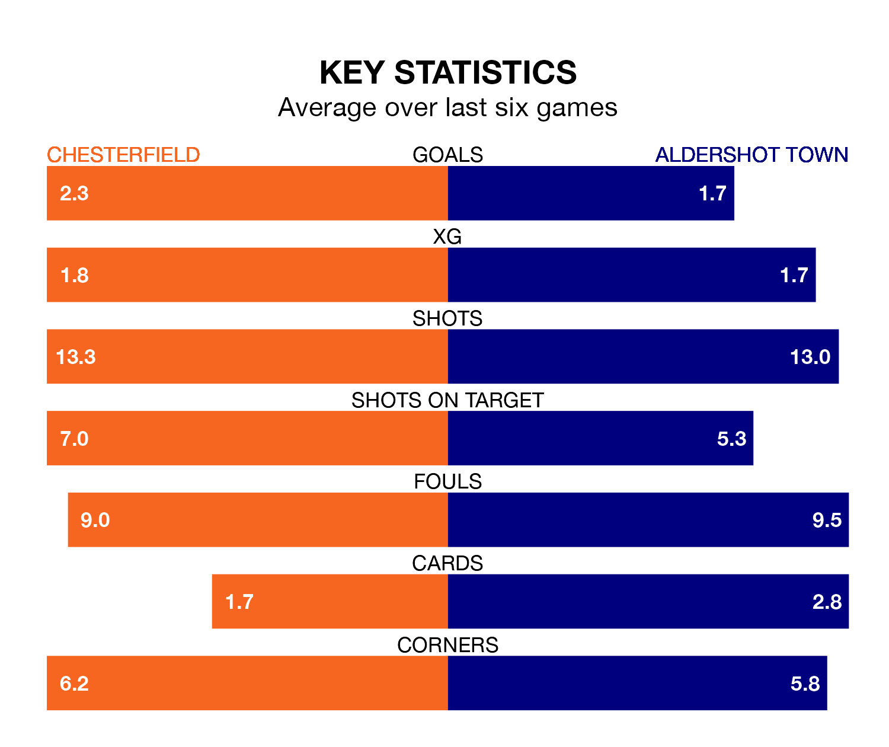

Chesterfield are heavy favourites to keep all three points at home in Saturday's kick-off against Aldershot Town.
The Spireites, who sit top of National League with 22 games played, are priced at 1.3 to seal victory at the SMH Group Stadium.
Sitting six places and 20 points behind them in the table, Aldershot are 5.0 to win with *Betting Company*, while the draw is at 5.2.
With 54 goals in 22 games so far this season, Chesterfield are the league's highest scorers with 2.5 goals per game. And they are conceding fewer than average, letting in 28 goals at a rate of 1.3 per game.
Aldershot are also above average scorers, with 1.8 goals per game, compared to a league average of 1.5. They have also conceded 1.8 goals per game.
The Spireites are in fantastic form in National League, with five wins and one loss from their last six games.
With three wins and three losses over that period, Town's form is much worse – they have taken nine points from 18, compared to the hosts' 15.
In Will Grigg, Chesterfield have one of the league's most on-form strikers so far this season. He has notched 11 goals in 21 appearances, to sit seventh in the scoring charts.
The Shots's top scorer, with 11 goals in 22 games, is Josh Stokes.
In the last three years, Chesterfield and Aldershot have played each other on six occasions. Chesterfield won four of them and they drew twice.
On average, the Spireites scored 1.5 goals and the Shots 0.7 in those matches.
Their last meeting was on September 2, when Chesterfield won 4-3 away.
Chesterfield's last match was on December 16, a 1-0 win against Hartlepool United, with Armando Dobra getting the goal for the Spireites.
Aldershot lost 5-3 against Eastleigh last time out, also on December 16, with Stokes (two) and Jack Barham on the scoresheet.
